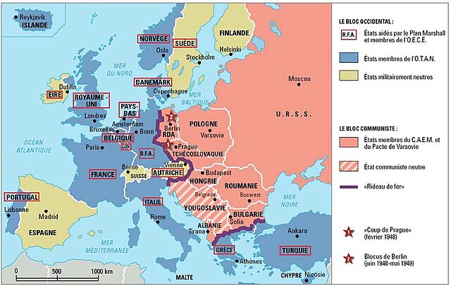
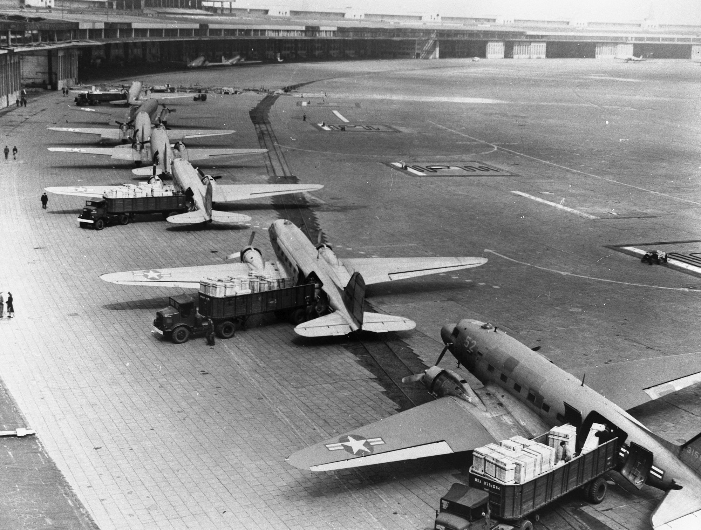

La Guerre froide est un conflit idéologique, politique et économique qui a opposé les États-Unis et l’Union soviétique après la Seconde Guerre mondiale, de 1947 à 1991. Elle ne s’est pas traduite par une guerre directe entre ces deux puissances, mais par une série de tensions, de menaces et de conflits indirects
Elle commence en 1947, lorsque les États-Unis lancent la doctrine Truman pour contenir le communisme. En réponse, l’URSS impose son influence sur les pays d’Europe de l’Est. C’est le début de la division du monde en deux blocs : le bloc de l’Ouest (capitaliste) et le bloc de l’Est (communiste).
Plusieurs événements marquent cette période :
Dans les années 1980, l’URSS connaît des difficultés économiques. Le président Mikhaïl Gorbatchev lance des réformes (la perestroïka et la glasnost), mais cela ne suffit pas. En 1989, le mur de Berlin tombe. En 1991, l’Union soviétique est dissoute. C’est la fin de la Guerre froide.
À la fin de la Seconde Guerre mondiale en 1945, le monde est profondément bouleversé. L’Allemagne est vaincue, l’Europe est détruite, et deux grandes puissances sortent renforcées : les États-Unis et l’Union soviétique. Ces deux pays, alliés pendant la guerre, deviennent rapidement rivaux à cause de leurs idéologies opposées : le capitalisme à l’ouest, dirigé par les États-Unis, et le communisme à l’est, mené par l’URSS.
Leurs visions du monde, leurs systèmes politiques et économiques sont incompatibles. Très vite, la méfiance s’installe entre les deux anciens alliés. L’Europe est divisée, l’Allemagne est partagée, et chaque camp tente d’imposer son influence sur le monde. C’est dans ce contexte de tensions grandissantes que débute la Guerre froide, une période où chacun cherche à montrer sa puissance sans jamais entrer directement en guerre.
➡️ Le monde passe rapidement d’une guerre mondiale à une opposition entre deux systèmes.
| États-Unis (Ouest) | URSS (Est) |
|---|---|
| Démocratie libérale | Dictature du parti unique |
| Économie capitaliste | Économie planifiée |
| Libertés individuelles | Contrôle de la société |
| Alliés : Europe de l’Ouest, OTAN | Alliés : Europe de l’Est, Pacte de Varsovie |
➡️ L’Europe est coupée en deux : “rideau de fer” selon Churchill.
Pas de guerre directe entre les deux (à cause de l’arme nucléaire).
Staline bloque tous les accès à Berlin-Ouest pour forcer les Alliés à quitter la ville.
Les États-Unis organisent un pont aérien pour ravitailler la ville.
Le blocus échoue, c’est une victoire symbolique de l’Ouest.
La Corée est coupée en deux : le Nord (communiste, soutenu par l’URSS et la Chine) et le Sud (soutenu par les USA).
Le Nord attaque le Sud. Les Nations Unies interviennent (principalement les USA).
Résultat : statu quo, toujours deux Corées aujourd’hui.
Le Nord (communiste, soutenu par l’URSS et la Chine) veut réunifier le pays.
Les États-Unis interviennent massivement pour soutenir le Sud.
C’est un échec américain (humiliation après leur retrait en 1975).
Conséquence : unification du Vietnam sous régime communiste.
Tentative de réforme du socialisme par le dirigeant Dubček en Tchécoslovaquie.
L’URSS intervient avec le Pacte de Varsovie pour stopper les réformes.
Fin de l'espoir de "socialisme à visage humain".
Le Nord (communiste, soutenu par l’URSS et la Chine) veut réunifier le pays.
Les États-Unis interviennent massivement pour soutenir le Sud.
C’est un échec américain (humiliation après leur retrait en 1975).
Conséquence : unification du Vietnam sous régime communiste.

En octobre 1962, des missiles soviétiques sont repérés à Cuba grâce à des avions espions américains.
Ces missiles pourraient frapper les USA en quelques minutes : c’est une menace directe.
Le président américain John F. Kennedy impose un blocus naval autour de Cuba pour empêcher l’arrivée de nouveaux missiles.
Le monde entier retient son souffle : la menace d’une guerre nucléaire est réelle.
Après plusieurs jours de tension, Khrouchtchev (URSS) accepte de retirer les missiles de Cuba.
En échange, les USA promettent de ne pas envahir Cuba et retireront secrètement leurs missiles de Turquie.
La coexistence pacifique est une nouvelle stratégie mise en avant par l'URSS après la mort de Staline (1953), visant à réduire les tensions avec les États-Unis sans abandonner la rivalité idéologique entre le capitalisme et le communisme.
Malgré l’idée de coexistence pacifique, plusieurs crises éclatent :
La crise de Cuba (1962) marque la fin de cette phase : les deux superpuissances réalisent qu’elles sont allées trop loin, ce qui mène à une période de détente dans les années 1970.
La détente est une période de relâchement des tensions entre les deux grands blocs (États-Unis et URSS), après la crise des missiles de Cuba en 1962, qui avait failli provoquer une guerre nucléaire.
La crise de Cuba (1962) a montré que la confrontation directe est trop dangereuse.
Les deux superpuissances cherchent donc à dialoguer, à éviter une guerre nucléaire, tout en restant rivales.
➡️ C’est le retour de la guerre froide, avec une nouvelle période de tensions appelée la “guerre fraîche” (1980-1985 environ).
La "guerre fraîche" désigne le retour des tensions fortes entre les États-Unis et l’URSS après la période de détente.
Ce terme a été popularisé par les médias pour montrer que les relations entre les deux superpuissances s’étaient à nouveau glacées, comme au début de la Guerre froide.
→ L’URSS intervient militairement pour soutenir un régime communiste à Kaboul.
→ Les États-Unis condamnent cette invasion et soutiennent les moudjahidines (résistants afghans).
→ Les deux blocs augmentent fortement leurs budgets militaires.
→ Les USA installent des missiles en Europe de l’Ouest.
→ L’URSS installe aussi des missiles de moyenne portée.
Mikhaïl Gorbatchev devient dirigeant de l’URSS en 1985. Il lance deux grandes réformes :
Il cherche à moderniser le communisme et à réduire les tensions avec l’Occident.
Entre 1989 et 1991 :
La Guerre froide se termine officiellement en 1991, sans affrontement direct entre les deux grands blocs, mais après plus de 40 ans de tensions, crises et conflits indirects.
GUERRE FROIDE